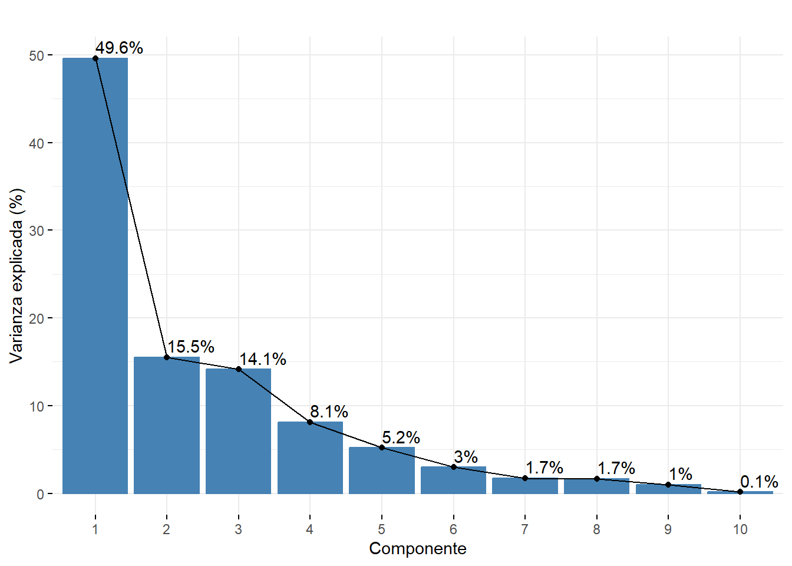
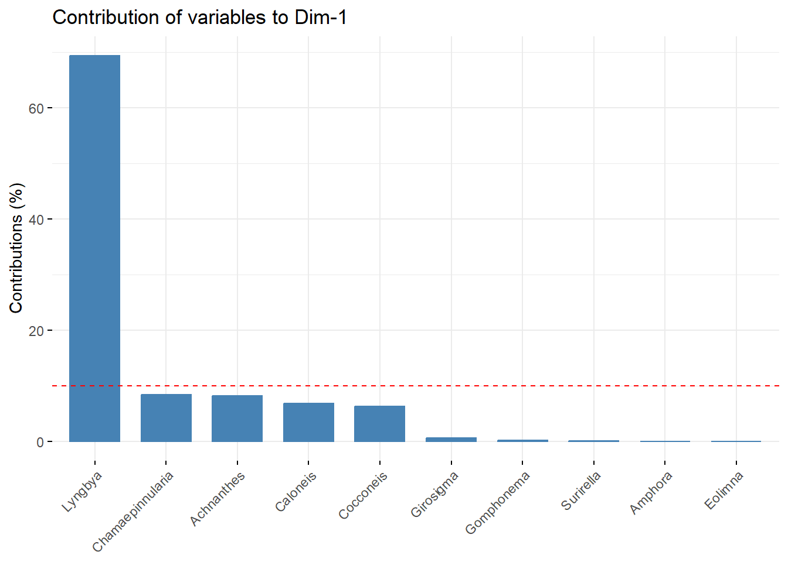
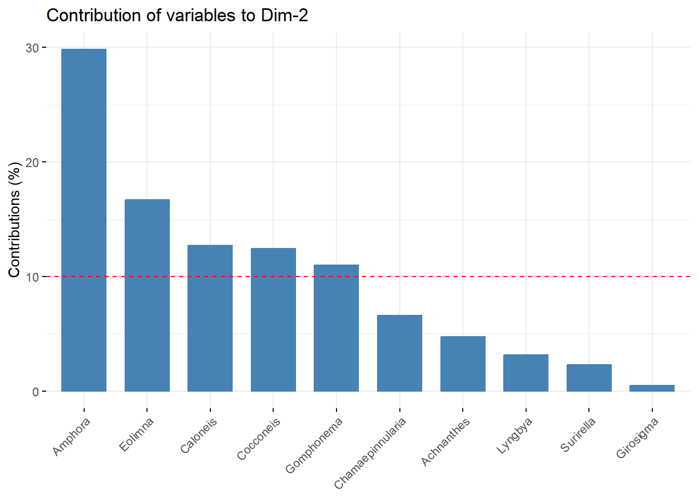
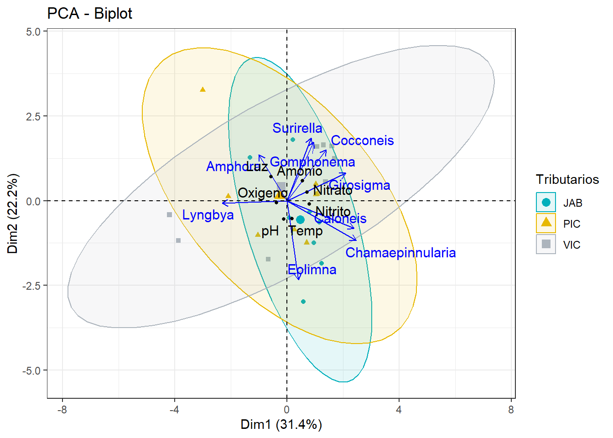
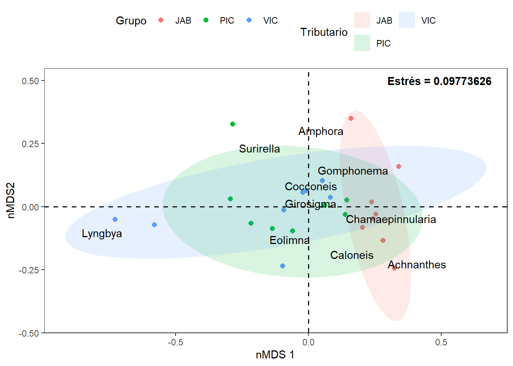
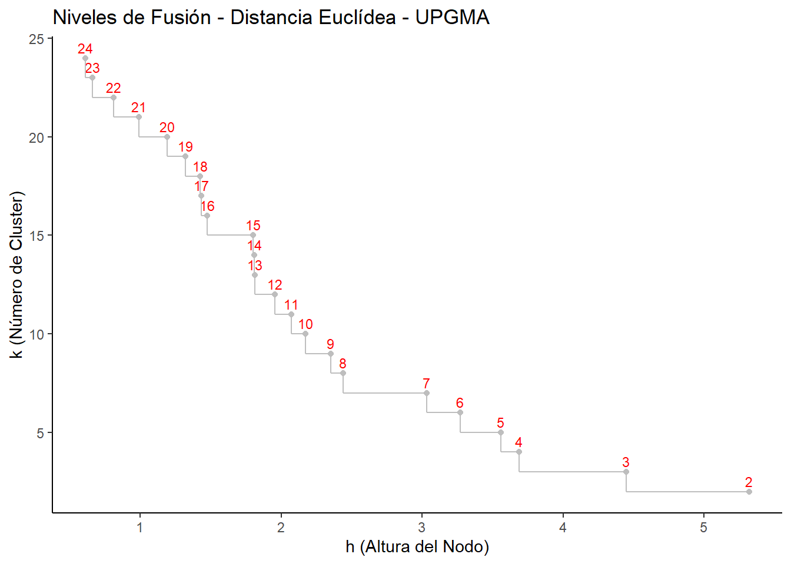
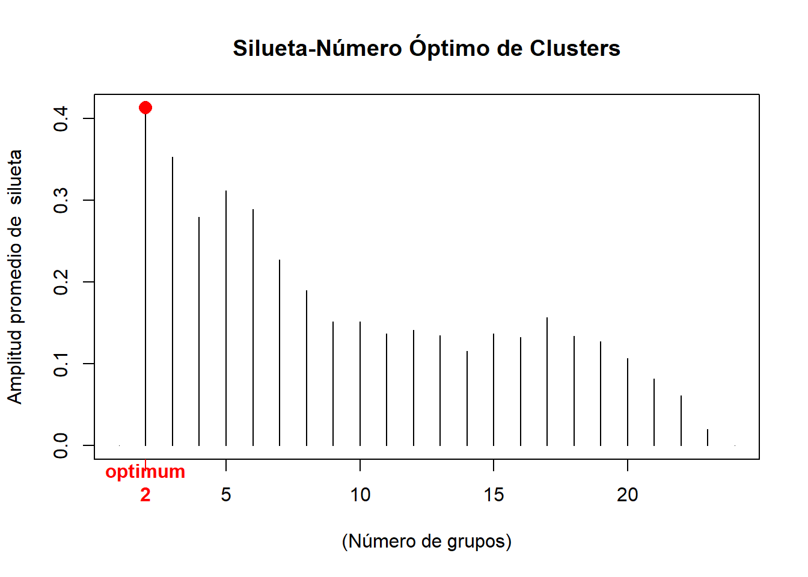
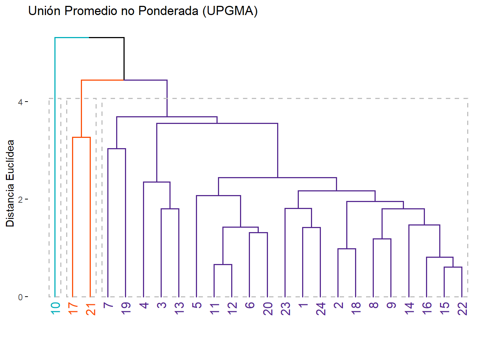
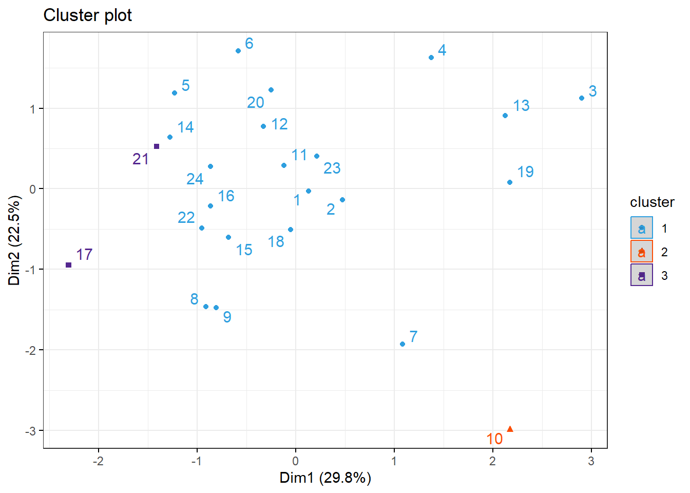
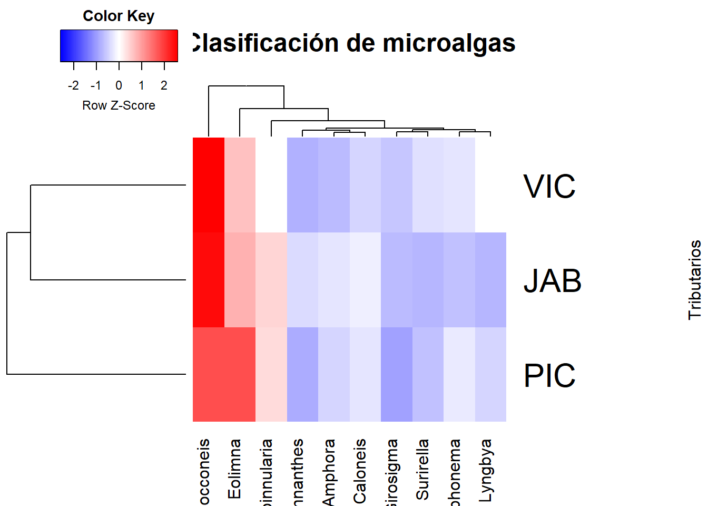

Código
library(ggplot2)
library(reshape2)
library(ggrepel)
library(vegan)
library(factoextra)
library(ggsci)
library(ggforce)
library(concaveman)
library(corrplot)
library(readxl)
library(dplyr)
library(kableExtra)
PENDIENTE
Analizar la diferencia en la densidad y la composición de las microalgas periféricas con diferentes niveles fisicoquímicos en tres tributarios del sector medio del rio Gaira SNSM.
¿Cuál es la variación en la densidad y la composición de las microalgas perifiticas con diferentes niveles fisicoquímicos en tres tributarios del sector medio del rio Gaira SNSM??
H0: No existe diferencia en la densidad y la composición de microalgas perifíticas con diferentes niveles fisicoquímicos en los tres Tributarios de la cuenca media del Rio Gaira.
Ha: Existe diferencia en la densidad y la composición de microalgas perifíticas con diferentes niveles fisicoquímicos en los tres Tributarios de la cuenca media del Rio Gaira.
library(ggplot2)
library(reshape2)
library(ggrepel)
library(vegan)
library(factoextra)
library(ggsci)
library(ggforce)
library(concaveman)
library(corrplot)
library(readxl)
library(dplyr)
library(kableExtra)microalgas <- read_excel("microalgas.xlsx")# Variables ambientales
amb = log10(microalgas[,c(2:8)]+1)
# Variables biologicas transformados con Hellinger
bio = decostand(microalgas[,c(10:19)],"hellinger")head(microalgas) %>%
kbl(booktabs = F) %>%
kable_classic(full_width = F, html_font = "Cambria")| Grupos | Amonio | Nitrito | Nitrato | Oxigeno | pH | Luz | Temp | Den | Achnanthes | Amphora | Caloneis | Chamaepinnularia | Cocconeis | Eolimna | Girosigma | Gomphonema | Surirella | Lyngbya |
|---|---|---|---|---|---|---|---|---|---|---|---|---|---|---|---|---|---|---|
| VIC | 0.301 | 0.838 | 0.901 | 7.68 | 8.10 | 800 | 17.6 | 34.334 | 0.000 | 1.333 | 0.000 | 0.667 | 3.000 | 4.667 | 0.000 | 0.000 | 0.667 | 24.000 |
| VIC | 0.301 | 0.779 | 0.830 | 6.54 | 7.45 | 400 | 18.3 | 32.999 | 0.000 | 1.000 | 0.000 | 0.333 | 6.333 | 8.000 | 0.000 | 0.000 | 0.000 | 17.333 |
| VIC | 1.107 | 1.176 | 3.430 | 5.62 | 7.81 | 300 | 17.1 | 22.667 | 0.000 | 0.000 | 0.000 | 3.333 | 8.667 | 8.000 | 0.000 | 0.667 | 0.000 | 2.000 |
| VIC | 1.024 | 0.882 | 2.670 | 6.08 | 9.21 | 100 | 18.6 | 41.000 | 0.333 | 0.667 | 2.333 | 6.333 | 10.000 | 8.000 | 2.667 | 3.667 | 1.667 | 5.333 |
| VIC | 0.194 | 0.147 | 0.524 | 5.10 | 9.24 | 800 | 17.9 | 131.334 | 1.667 | 3.000 | 4.000 | 13.333 | 52.667 | 23.333 | 6.667 | 11.000 | 10.000 | 5.667 |
| VIC | 0.206 | 0.471 | 0.895 | 5.60 | 9.63 | 200 | 17.8 | 130.000 | 2.000 | 3.333 | 9.333 | 9.667 | 52.333 | 20.667 | 4.333 | 9.667 | 9.667 | 9.000 |

En la Figura 1 se observan algunas relaciones lineales fuertes entre taxones como es el caso de Surirella con Girosigma y Gomphonema. Las relaciones màs fuertes se estan dando entre parejas de taxones. Sin embargo en general no se presentan muchas relaciones lineales fuertes tanto positivas como negativas.

En la Figura 2 se observan unicamente relaciones lineales positivas entre parejas de taxones y se descartan las relaciones más bajas. En general todas las relaciones son batante fuertes las más significativas estan dadas entre Calonesis con Girosigma y Chamaepinnularia con Eolimna. Se observaque en mayor o menor proporcion la presencia de los diferentes taxones se encuentra favoreciendo a los demás taxones.
Figura 3. Ambientales y biologicas VS Ambientales y biologicas transformadas con Hellinger.

En la Figura 3 se observan muy pocas relaciones significativas entre las variables fisicoquimicas y los taxones. Se encuentran algunas relaciones negativas entre la Luz y Surirella, Lyngbya, Eolimna y Gomphonema. En cuanto a las demás parejas de variables se aprecian algunas relaciones positivas con la temperatura y el pH, siendo la relacion entre la temperatura y Surirella la más fuerte.

En la Figura 4 se puede observar que las cajas se encuentran solapadas y las medianas de los tres tributarios son practicamente iguales, además existe unan alta dispersion de los datos, lo que indica que no existe una verdadera diferenciacion en la densidad de microalgas entre cada tributario evaluado.

En la Figura 5 se observa que en general para la mayoria de los taxones no existe una diferencia en la densidad total de microalgas por cada tributario, las medias de los tres tributarios son similares y los intervalos de confianza se encuentran solapados. Para el taxon Achnanthes se puede observar que en tributario Jabali los datos de densidad se alejan de la tendencia anteriormente mencionada y en otros taxones como Girosigma y Suriella los valores de densidad presentan una dispercion mucho mayor en el tributario La Victoria.

En la Figura 6 se observa que para todas las variables ambientales los valores de la media son muy similares o incluso iguales en algunos casos para cada uno de los trubutarios, mientras que el rango de los datos varia mucho más entre tributarios para algunas variables como el Nitrito. Sin enbargo para todos los fisicoquimicos exepto el Oxigeno existe la precencia de outliers los cuales pueden causar sesgos en parametros como la media, distarcionar considerablemente el analisis grafico alterando las escalas lo que puede ocacionar que los datos parescan más dipersos de lo que en verdad son. Todo esto puede ocultar patrones importantes llevando a conclusiones sesgadas.

En la Figura 7 se obserba que el primer componente recoge una varianza del 46.6% mientras que el segundo componente recoge un 15.% de la varianza.

En la Figura 8 se obserba que Lyngbya es el taxon de mayor aporte en el primer componente.

En la Figura 9 se obserba que Amphora Eolimna Caloneis Cocconeis Gomphonema son los taxones de mayor aporte en el segundo componente.

En la Figura 10 …

En la Figura 11 …

En la Figura 12 …

En la Figura 13 …

En la Figura 14 …

En la Figura 15 …

En la Figura 16 …